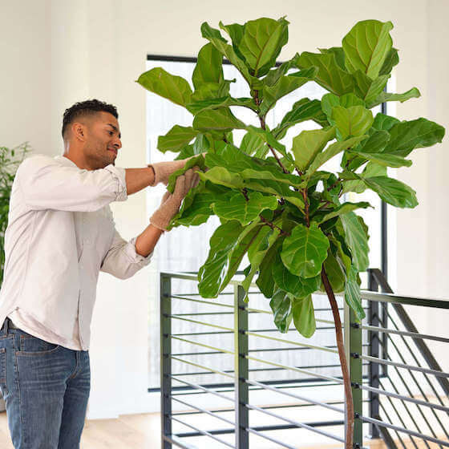
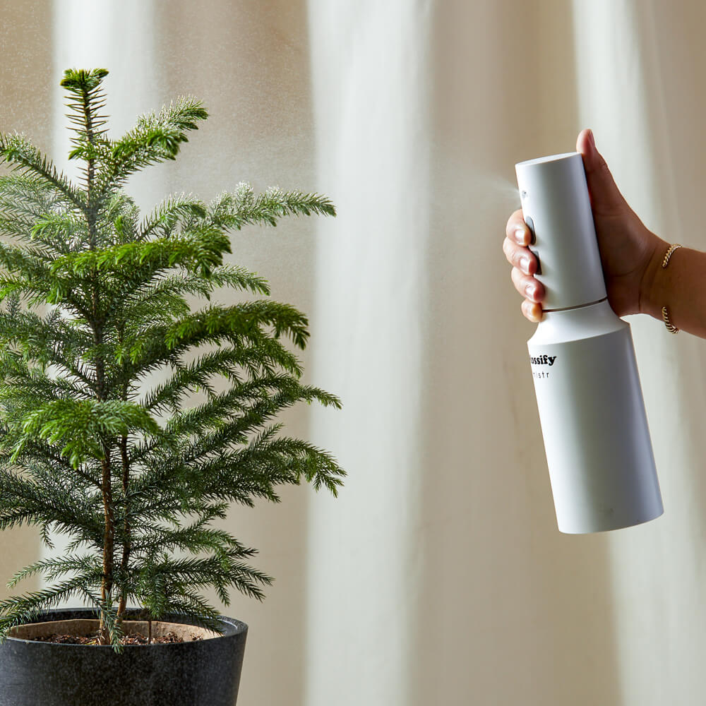

Based in Tuscon, Arizona, Lucky Shrub is a medium-sized garden design firm that specializes in garden design and creation, maintenance and landscaping. The company also runs a small plant nursery that sells indoor and outdoor plants, making them a one-stop shop for clients to "transform any space into an oasis you can be proud of"

Design your garden
Lucky Shrub was started by a husband and wife team, Jason and Maria, who share a long-time love for plants. Jason is the garden architect. He creates and oversees all designs while managing his team of landscapers. Maria manages all the marketing for the company and oversees the nursery.
Order a consultation
Lucky Shrub was started by a husband and wife team, Jason and Maria, who share a long-time love for plants. Jason is the garden architect. He creates and oversees all designs while managing his team of landscapers. Maria manages all the marketing for the company and oversees the nursery.

Shop for plants
In our nursery you can find any plant that will suit your outdoor or indoor garden. Raised with love and proper care, our greenery is the best you can find and adopt. Our service will help you to establish every step of your home perfoming composition of design, because beware - professionals are working in a field!